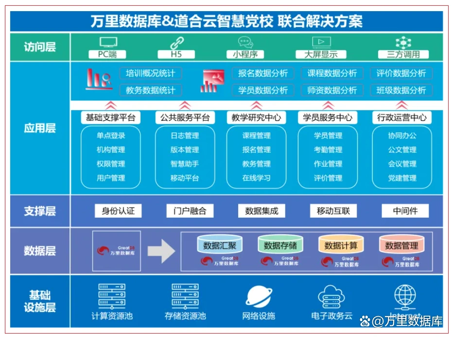

战略合作｜万里数据库携手道合云 共建安全创新智慧党校平台
聚焦智慧党校 携手合作共赢
近期，北京万里开源软件有限公司（以下简称“万里数据库”）与业内领先的智慧党校解决方案开发商——成都道合云科技有限公司（以下简称“道合云”）正式达成战略合作，双方基于自身产品技术优势及客户资源，聚焦智慧党校应用场景打造联合解决方案，结合全国多地省/市/县党校业务场景，展开产品技术融合与项目合作落地。
作为万里数据库与党政行业信息化独立软件开发商的一次重要合作，此举意义非凡。双方秉持开放协同、生态共赢、以客户为中心的合作理念，取得了优秀的合作成绩，也为展开长期战略合作建立了良好基础。
聚焦智慧党校应用场景
打造联合解决方案
万里数据库与道合云携手，基于智慧党校应用场景进行双方产品技术的深度融合与协同，打造联合解决方案。双方充分利用万里安全数据库软件的安全可靠能力、MySQL平滑替代优势和道合云在党校信息化领域的应用实践能力，共同打造一个高效、安全、创新的智慧党校平台。
具体而言，万里安全数据库的安全可靠优势为智慧党校提供安全、可靠的数据存储和处理环境，特别是对应用系统原有MySQL开源数据库的平滑替代优势，在保障智慧党校平台数据安全性和系统稳定性的同时，大幅降低迁移风险并减少系统上线时间。道合云拥有从教务管理、学员管理到教学资源库建设等多方位的智慧党校产品线，双方产品的深入融合，在教务管理、学员管理、教学资源库建设等模块上大幅提升了业务系统效率。

教务管理方面，基于道合云应用软件功能，结合万里安全数据库GreatDB的高性能计算和存储能力，可实现课程安排、学员信息、成绩等数据的快速处理分析，提高教务管理自动化和智能化水平；
学员管理方面，通过安全数据库GreatDB强大的数据处理能力，支持学员学习进度、考核结果等信息的实时跟踪和管理，提高管理效率的同时，为个性化教学提供数据支持；
教学资源库建设方面，万里安全数据库GreatDB的高可靠和灵活扩展性，为教学资源的集中存储、管理和共享提供了技术保障。道合云基于万里安全数据库多项技术能力，构建起内容丰富、易于管理的教学资源库，便于教师和学员获取和利用教学资源；
尤其在智慧党校个性化需求深度定制方面，联合解决方案拥有独特优势。万里安全数据库GreatDB的开放性和可扩展性架构，使道合云能根据党校具体需求，定制开发特定功能模块，如移动学习应用、在线考试系统等，进一步丰富了智慧党校平台的应用场景。
这些原因
让道合云选择万里数据库
谈及为何选择与万里数据库进行战略合作？道合云公司总经理罗青云表示：道合云与万里数据库达成合作，是基于对信创数据库的共同追求、对万里MySQL平滑替代能力的认可、对用户口碑的高度重视以及对市场实力相互认同后的全面考量，展开的深度全方位合作。
罗青云总经理强调，相比首批通过安全可靠测评名单中的其他数据库产品，万里安全数据库GreatDB拥有更好的MySQL平滑替代能力。实际项目中，在原应用软件未做任何代码修改的前提下，快速完成了数据库从MySQL到GreatDB的迁移改造，同时万里数据库的运行效率和保密安全性能均优于MySQL，整体表现非常出色。
1、信创为基
信创数据库是双方达成合作的重要基础。在国家大力推动信创产业发展背景下，万里数据库作为国内首批通过安全可靠测评的数据库厂商之一，拥有自主可控核心技术，具备卓越的信创数据库能力，与道合云致力于党校信息化建设的国产化需求不谋而合。万里安全数据库GreatDB产品的安全性、稳定性、性能都经受住了市场的严格考验，符合国家对关键信息基础设施的高标准要求，为双方合作奠定坚实基础。
2、产品铸信
万里数据库凭借在数据库领域的深厚技术积累，提供了高性能、高可靠、高安全的数据处理能力。基于对MySQL生态及相关技术工具的全面兼容，加之多年产品持续的迭代创新，万里安全数据库GreatDB在部分关键特性和安全保密方面优于国内外同类产品，为道合云智慧党校解决方案提供了强大的底层技术支持，确保系统高效运行和数据安全性。
3、口碑为王
凭借优质的数据库产品技术和专业服务，万里数据库多年来广受用户信赖与好评，建立了良好的用户口碑。
4、实力保障
市场地位与公司实力也是道合云选择万里数据库的另一关键因素。作为一家拥有超过二十年基础软件研发积淀的国家高新技术企业，万里数据库不仅在技术创新上实力强大，在技术服务、市场拓展、人才培养等方面亦拥有丰富的实践经验。
公司多年来在金融、电信、政府等多个关键行业占据重要市场地位，拥有广泛的用户基础和市场认可度。道合云通过此次合作，有望进一步提升自身产品的市场竞争力和品牌价值，为双方未来的长远合作提供持续动力和平台保障。
着眼未来，万里数据库与道合云将聚焦技术研发深化与集成创新、技术架构优化与系统升级、产品功能创新、用户体验提升、数据驱动决策与智能分析、安全合规性保障等多个维度，携手打造一个技术更先进、功能更全面、数据更安全的智慧党校信息化平台，为全国各地省市区党校的数字化转型提供强有力的技术支撑，推动党校教育事业高质量发展。
与道合云的合作
不止于数据库
本次战略合作不仅为双方提供了深入的沟通交流机会，也为未来打开了更大的合作空间。展望未来，以万里数据库及其母公司创意信息在人工智能和大数据领域的技术实力和人才优势，将为双方深化合作搭建更大的发展平台。双方一致认同以此为契机，进一步探索人工智能大模型在智慧党校领域的广泛应用，通过整合各自在技术、人才、资金、客户等多方面的优势资源，充分利用本地算力，运用创新算法和深度学习技术，共同打造一套符合党校行业特点的智能化管理和教学定制化解决方案。
基于人工智能大模型的合作与探讨将推动党校智慧教育模式的创新，实现个性化学习、智能课程设计、学员行为分析等功能的全面升级，显著提升党校管理效率和服务质量。期待通过万里数据库与道合云的共同努力，为党校学员提供更加高效、便捷、个性化的学习体验，为党校教育事业的现代化发展贡献力量。
同时，双方也认识到，随着技术的更新迭代和市场的不断变化，智慧党校领域的发展将充满机遇与挑战，保持开放心态、持续跟踪行业动态与技术趋势、优化创新合作模式，才能应对未来可能出现的新挑战和新需求。期待双方的合作成果为党校行业树立标杆典范，推动党校行业数智化转型与可持续发展。